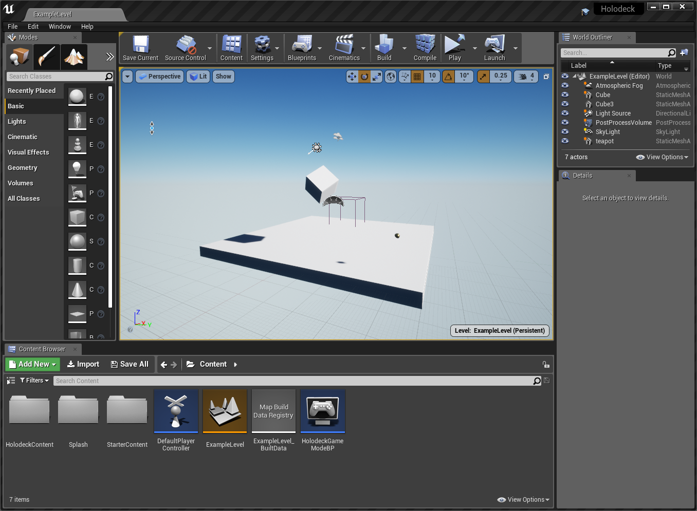

The engine side of holodeck is an Unreal project that has synchronization code written in C++ to communicate with the engine, found in the holodeck-engine repo. For details on how those two halves communicate, see Holodeck Communication Protocol.
1. Get Unreal Editor
In order to modify the engine, you must have the Unreal Editor installed. For Windows, you can just install it from the Epic Game Launcher (see https://www.unrealengine.com/), but for Linux you must compile the editor yourself (see here
You must install the version of Unreal Editor that holodeck is currently using, check the changelog to see which version holodeck-engine is currently using. As of this writing the current version is 4.22.
2. Clone Repo
To start, clone the repo (https://github.com/BYU-PCCL/holodeck-engine). You must have git-lfs installed and enabled, after running git clone you should be able to run git lfs pull and get output like the following:
jayden@NAGA:~/dev/temp$ git clone git@github.com:BYU-PCCL/holodeck-engine.git
Cloning into 'holodeck-engine'...
remote: Enumerating objects: 57, done.
remote: Counting objects: 100% (57/57), done.
remote: Compressing objects: 100% (44/44), done.
remote: Total 6769 (delta 22), reused 24 (delta 12), pack-reused 6712
Receiving objects: 100% (6769/6769), 4.53 MiB | 9.84 MiB/s, done.
Resolving deltas: 100% (3884/3884), done.
Filtering content: 100% (181/181), 224.26 MiB | 9.61 MiB/s, done.
jayden@NAGA:~/dev/temp$ cd holodeck-engine/
jayden@NAGA:~/dev/temp/holodeck-engine$ git lfs pull
jayden@NAGA:~/dev/temp/holodeck-engine$
3. Opening Project
You should now be able to open holodeck.uproject in the editor.
If you get an error about assets being corrupt, you didn't do a git lfs pull correctly.
If you get an error about assets being saved with a different engine version, make sure you installed the correct version.
You should see the ExampleLevel loaded up:

4. 生成项目文件
在 Windows 系统中，右键单击资源管理器中的 holodeck.uproject 文件，然后选择"Refresh Visual Studio Projects"。
在 Linux 系统中，请参阅如何在 Linux 上调试 Holodeck 引擎以生成项目文件。
这样，您就可以在 IDE 中打开 Holodeck 并编辑 C++ 文件，以及调试已编译的项目。
5. 烘焙内容
在虚幻编辑器中，选择“文件”->“为 {平台} 烘焙内容”。几分钟后，右下角应该会弹出成功提示。
必须先执行此操作，才能从调试器运行 Holodeck。
6. 运行项目
您可以从这里开始，打包项目以便从客户端启动（例如使用 holodeck.make() 或实例化一个 HolodeckEnvironment），或者将客户端附加到在调试器或虚幻编辑器中运行的引擎实例。
待办事项：编写并链接到相关页面，解释如何在此处运行项目。
FAQ
所有关卡/资产都去哪儿了？
我们购买了许多素材的授权来创建我们打包分发的关卡，但我们并不拥有这些素材的所有权。根据这些授权协议的条款，我们无法以未处理的形式分发它们。很遗憾，holodeck-engine 代码库中的内容就是我们所能提供的全部，抱歉。您可以自由创建自己的关卡/世界并自行授权。